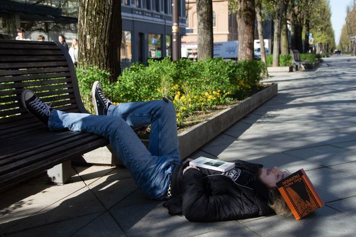
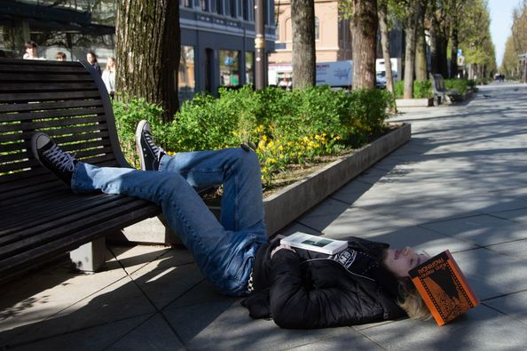

Konkursas „Aš, knyga ir pavasaris“
 

Respublikinio virtualaus fotografijų konkurso „Aš, knyga ir pavasaris“ KITM mokinių darbai, tarp kurių rasite ir konkurso I-osios vietos (9-12 klasių amžiaus grupėje) laimėtojo Augusto Vaičiulio darbą. 👏 Diplomai taip pat atiteko šių nominacijų laimėtojams: ⭐️ Domantui Belickiui, nominacija „Nuo skaitymo ir galva apsisuko“ ⭐️ Ignui Žilinskui, nominacija „Noriu pavasario, bet reikia skaityti“ Ir žinoma padėka fotografijos mokytojai Gretai už iniciatyvumą bei mokinių kūrybiškumo skatinimą. 🫶